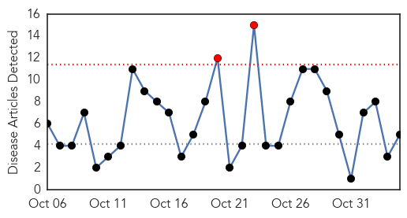
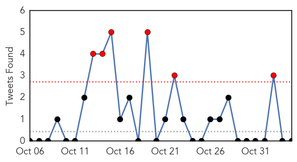
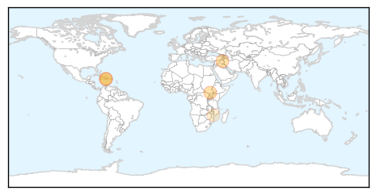
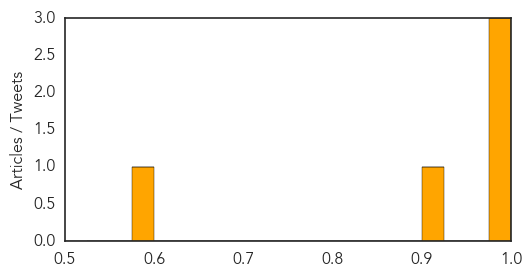
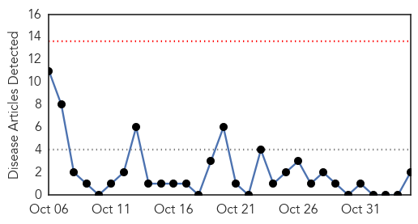
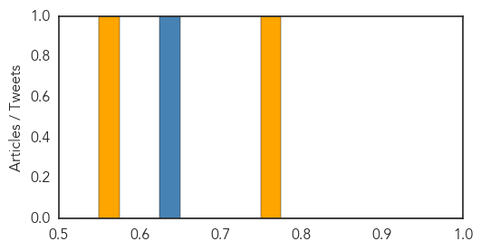

Cholera
30-Day Web Trend
2 alerts, 0 warnings

30-Day Twitter Trend
6 alerts, 0 warnings

Article Locations
Article Confidences
Top Articles:
Top Tweets:
-
No tweets found for Nov 04, 2015
MERS
30-Day Web Trend
0 alerts, 0 warnings

30-Day Twitter Trend
9 alerts, 0 warnings

Article Locations

Article Confidences
Top Articles:
Top Tweets:
- 0.640
- AFD blog `EID Journal: Risk Factors For Primary MERS-CoV Infection Saudi Arabia' MERS-CoV https://t.co/PMpx69KqBv